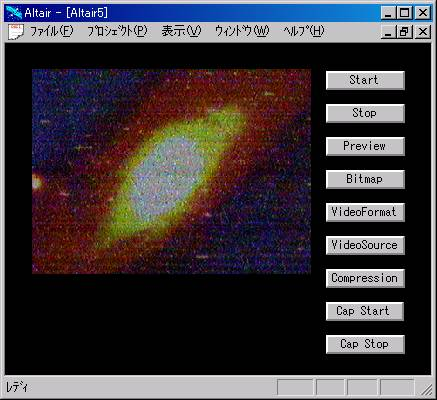

VideoCaptuer OLE Control
第0.43版 2016年10月23日
第0.32版 2003年 8月15日
概要
Video for WindowsのAPIを使って、ビデオキャプチャーデバイスで
動画をキャプチャーしたり、ビデオ入力の動画を表示するOLEコントロールです。
名前は、「RobotVision Control」で、ProgIDは、「ROBOTVISION.RobotVisionCtrl.1」です。
メソッド
OCXのウインドウをビデオキャプチャーデバイスに接続します。
ビデオキャプチャーデバイスとOCXのウィンドウの接続を切断します。
キャプチャーするイメージのフォーマットを設定するダイアログを出します。
成功するとTRUEが返ります。
注意：デバイスドライバがこの機能をサポートしていない場合があります。
ビデオキャプチャーボードが複数の入力を持つ場合、どの入力を選択するかを設定するダイアログを出します。
TVチューナー付きビデオキャプチャーボードの場合、TVチャンネルの設定もできます。
成功するとTRUEが返ります。
注意：デバイスドライバがこの機能をサポートしていない場合があります。
キャプチャーしたイメージを動画で保存する場合の圧縮方式を設定するダイアログを出します。
成功するとTRUEが返ります。
注意：デバイスドライバがこの機能をサポートしていない場合があります。
最近キャプチャーしたイメージをfilenameで指定されるBMP形式ファイルに保存します。
成功するとTRUEが返ります。
キャプチャーしている動画のfilenameで指定される動画ファイルへの保存を開始します。
成功するとTRUEが返ります。
動画ファイルへの保存を終了します。
プロパティ
ビデオキャプチャーデバイス番号です。
デフォルトは0です。
Startした後、ビデオキャプチャードライバーの名前になります。
Startした後、ビデオキャプチャードライバーのバージョンになります。
１秒間の間に何フレームキャプチャするかの数です。
デフォルトは15です。
キャプチャーイメージのサイズをOCXのサイズにリサイズするかを示します。
デフォルトはTRUEです。
OCXのウィンドウで動画を表示するかを示します。
デフォルトはTRUEです。
ハードウェアオーバーレイをするかどうかを示します。
Startした後ドライバがハードウェアオーバーレイをサポートしていればTRUE、
サポートしていなければFALSEになります。
サンプル
前準備
Altairのサンプルの前準備で、
ライブラリgbgp.albが作成されていることを確認してください。
プロジェクトgbgp.aprを開いてください。
クラスGbGpをダブルクリックしてください。
関数Runのところにキャレットをおいて
メニューの「インタプリタ - 実行」を行ってください。
これでGbGpサンプルが立ち上がります。
「開く」ボタンでrobot_vision/robot_vision.gprを開いてください。
ここで画面のの「Start」ボタンを押してください。
ビデオキャプチャーデバイスへの接続が行われます。
次に「VideoSource」ボタンを押して現れるダイアログで、
ビデオ入力の設定を行ってください。
これで、ビデオ入力の動画が表示されます。
